Bivariate linear relationships
When we have two variables measured per “unit” (e.g., measure height and weight for each person), we can refer to this as “bivariate” data. We already discussed how to analyze contingency tables when dealing with bivariate categorical data, here we are concerned with bivariate numerical data that may have a linear relationship.
To play with these measures, we will consider Karl Pearson’s data on the heights of fathers and their sons. (In 1895 Pearson worked out the formula for calculating what we now call the correlation coefficient.) Generally, we will look at a bivariate numerical relationship in a scatterplot, like the one below.
library(tidyverse, quietly=TRUE)
heights <- read_csv('http://vulstats.ucsd.edu/data/Pearson.csv')
heights %>%
ggplot(aes(x=Father, y=Son))+
geom_point()Linear relationships
Everything we discuss in this section is specific to measuring a linear relationship, meaning (informally) that the scatterplot looks like it would be meaningful to draw a line through it. This has two implications.
- Lots of patterns of bivariate data have a relationship between x and y (meaning that we can learn something about y by knowing x, or vice versa), but that relationship is not linear. The bottom row of the graph below (from wikipedia) does a great job showing many such cases.

- Many different patterns of data might yield exactly the same line, and line statistics, and our simple measures of a linear relationship will not be able to distinguish among them. The canonical example of this is Anscombe’s quartet (below; graph it yourself), which shows 4 sets of data with obviously very different relationships, but which have the same correlation, covariance, linear slope, as well as marginal means and standard deviations of x and y.
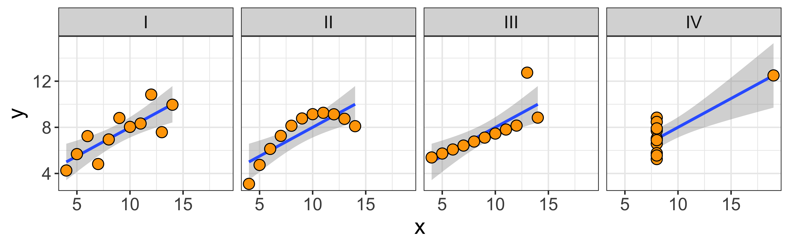
What this means, is that you should always look at a scatterplot of the data, don’t just blindly rely on the numerical summaries.
Covariance and correlation: Measuring the linear dependence.
Covariance
The co-variance measures whether, when x is bigger than the mean of x, is y also bigger than the mean of y, and what is the overall scale of this co-variation?
\[\operatorname{covariance}(x,y) = s_{xy} = \frac{1}{n-1}\sum\limits_{i=1}^n (x_i - \bar x)(y_i - \bar y)\]
To get an intuition for what this is doing, consider when the expression being summed (\((x_i - \bar x)(y_i - \bar y)\)) will be positive, and when it will be negative. When x and y both deviate from their means in the same direction (either both larger, or both smaller than their mean), this product will be positive. When they deviate in different directions (one smaller and the other larger than their mean), this product will be negative. Thus the whole sum will be very positive if x and y tend to deviate in the same direction as their respective means, and will be very negative if they tend to deviate in opposite directions.
Note that this expression (\((x_i - \bar x)(y_i - \bar y)\)) will give the same answer regardless of which variable we call x, and which we call y. So the covariance of x and y is the same as the covariance of y and x.
Also consider how this expression (\((x_i - \bar x)(y_i - \bar y)\)) will change if we (a) add a constant to x, or y, or both, and (b) multiply x or y or both by a constant. If we add a constant, it will just end up being subtracted out, since we consider only differences of a given value from its mean, thus the covariance will be the same regardless of where we “center” x and y. However, if we multiply x (or y) by something, we will end up scaling the distance between x and its mean. Thus, if we scale by a factor larger than 1, we will get a larger magnitude of this expression, and thus the covariance; and if we scale by a factor between 0 and 1, we will get a smaller covariance. So while the covariance doesn’t depend on the location it does depend on the scale of our variables.
In R we can calculate the covariance with the cov function:
cov(heights$Father, heights$Son)## [1] 3.875382Here are a few more detailed notes on the covariance.
Correlation coefficient
The correlation coefficient re-scales the covariance by the standard deviations of x and y, so it yields a measure of the linear relationship that is scale invariant, and is always between -1 and +1.
\[\operatorname{correlation}(x,y) = r_{xy} = \frac{\operatorname{covariance}(x,y)}{s_x s_y} = \frac{s_{xy}}{s_x s_y}\]
There are a bunch of ways to think about what the correlation means (this paper lists 13), but there are a few that I consider to be particularly useful:
The correlation is a scale-invariant covariance. It is equal to the covariance of the z-score of x and the z-score of y. Thus, it disregards both the location and the scale of the variables, so we will get the same correlation regardless of how we linearly transform (multiply by a constant and/or add a constant) x and y (provided we don’t multiply by a negative number – that will change the sign, but not the magnitude, of the correlation).
The correlation is the slope of the z-scores: meaning that if an x is 2 standard deviations above the mean of x, we would expect the corresponding y to be \(r_{xy}*2\) standard deviations above the mean of y (and vice versa).
The correlation squared is the “coefficient of determination”. We will talk more about this when we consider the partitioning of variance, but this basically means: the proportion of the variance of y that we can explain by its relationship with x (and vice versa) is \(r_{xy}^2\).
In R, we can calculate the correlation via cor, or calculate the correlation and test it’s significance via cor.test:
cor(heights$Father, heights$Son)## [1] 0.5011627cor.test(heights$Father, heights$Son)##
## Pearson's product-moment
## correlation
##
## data: heights$Father and heights$Son
## t = 18.997, df = 1076, p-value <
## 2.2e-16
## alternative hypothesis: true correlation is not equal to 0
## 95 percent confidence interval:
## 0.4550726 0.5445746
## sample estimates:
## cor
## 0.5011627For more details on the correlation, here are some detailed notes.
(OLS) Regression: Predicting the mean of y for a given x
A linear regression of y~x (“~” here is read “as a function of”) finds the “best fitting” line of the form \(a \cdot x + b\) to estimate the “conditional mean” of y at a given x.
heights %>%
ggplot(aes(x=Father, y=Son))+
geom_point()+
geom_smooth(method="lm")In the detailed notes we go through the mathematical definitions, but here, let’s just sort out what the different words in the sentence above mean.
Regression line of y~x estimates the conditional mean of y for a given x. Therefore, the y value of the line at a given x is the estimated mean of the y values with that paired x. For instance, the Son ~ Father line shown above has y=72.4 at x=75. This indicates that we estimate the mean height of Son, whose fathers are 75" tall, to be 72.4" tall.
A line (\(\hat y = a \cdot x + b\)) is characterized by its slope (\(a\)) and intercept (\(b\)).
The slope indicates how many units \(\hat y\) will increase (or decrease in the case of a negative slope) every time x goes up by one unit, thus it is in units of \(y/x\). For instance if the slope of a line predicting weight (kg) as a function of height (cm) is 0.44 (kg/cm), that means that we expect someone who is 1 cm taller to weight 0.44 kg more.
The intercept tells us the value of the line (\(\hat y\)), and thus our predicted mean y, when \(x=0\). So an intercept of of 2.46 on a line predicting weight (kg) as a function of height (cm) says that we predict people who are 0 cm tall to weigh 2.46 kg.For some parameters (in our case, a slope and intercept of a line) to be “best fitting,” that means that of all the values the parameters could have taken on, the “best fitting” values optimize some function that evaluates the overall fit. In the simple regression case, we evaluate the overall fit as the sum of squared errors, the smaller the better: \(\operatorname{SSE} = \sum_{i=1}^n (y_i - \hat y_i)^2 = \sum_{i=1}^n (y_i - (a\cdot x_i + b))^2\). So the “best fitting” line is the line with a slope (\(a\)) and intercept (\(b\)) that yields the smallest sum of squared errors. These are also the “maximum likelihood” slope/intercept because we usually specify a probability model for the data which says that the y values are Normally distributed around a mean which varies linearly with x: \(y_i \sim \operatorname{Normal}(a\cdot x_i + b, \sigma_e)\). Thus, although ‘least squares’ regression can be motivated simply by asserting that we want to minimize squared error, it also happens to be the correct procedure for estimating the maximum likelihood parameters under the standard regression model.
In R, we can do all this (and a whole lot more) with a single command lm, which stands for “linear model.” It takes as an argument a formula, and a data frame. A formula is written with the syntax respons.variable ~ explanatory.variable, so if we want to estimate the regression line predicting Son’ height as a function of fathers’ height, we would invoke the following incantation:
lm(data=heights, Son ~ Father)##
## Call:
## lm(formula = Son ~ Father, data = heights)
##
## Coefficients:
## (Intercept) Father
## 33.893 0.514Difference between y~x, x~y, and the principle component line
The “best fitting” line shown in the above section, doesn’t really look like the best fitting line. What gives? Consider the three lines below…
I bet the black line above looks like the best line to you, and both the red and blue lines seem off, right? So what are these lines?
Blue: the y~x line.
Red: the x~y line.
Black: the principle component line.
Why is the “best looking” line not the “best fitting” y~x line? While we’re at it, why is the y~x line different from the x~y line? The answer to all of these is that when we do a regression predicting y from x, we only care about error in y. We minimize the squared deviations of each data point from the line in y, while keeping x constant. Consider this a teaser explanation, and go read the more detailed explanation.
Partitioning variance
As we move toward more complicated data, and away from simply comparing means between groups, it is useful to consider our analysis goals as partitioning variance. We want to separate variability in some response variable into different sources. In the simple linear regression case, we are just going to separate out the variability of y into the linear ‘signal’ (variability in y which we can explain via a linear relationship with x), and ‘noise’ (all other variability). When we move on to more complicated regression setups, we will be using more explanatory variables, and thus will be partitioning variability into more sources. It is important to keep in mind that ‘noise’ depends very much on the model we are considering. Perhaps all the variability in sons’ heights we can’t explain with fathers’ heights might be explained by ‘volume of breast milk consumed in the first year of life,’ or some other variable we don’t have access to. Thus, the ‘noise,’ is just unexplained/unmodeled variance.
We have some detailed notes on partitioning variance, but briefly. When we partition variance, we mostly just consider the partitioning of the “sums of squares,” which we can get in R via the anova (analysis of variance) command, which tells us the variability in y attributable to our explanatory variable, and that which is left unexplained (residuals).
lm.son.father <- lm(data=heights, Son~Father)
anova(lm.son.father)## Analysis of Variance Table
##
## Response: Son
## Df Sum Sq Mean Sq F value
## Father 1 2145.4 2145.35 360.9
## Residuals 1076 6396.3 5.94
## Pr(>F)
## Father < 2.2e-16 ***
## Residuals
## ---
## Signif. codes:
## 0 '***' 0.001 '**' 0.01 '*' 0.05 '.'
## 0.1 ' ' 1The proportion of variability in y that we can explain by taking into account the linear relationship with x, is the correlation squared (\(r_{xy}^2\)). However, R will just give us this number if we look at the detailed summary of the linear model we fit (via the summary function).
summary(lm.son.father)##
## Call:
## lm(formula = Son ~ Father, data = heights)
##
## Residuals:
## Min 1Q Median 3Q Max
## -8.8910 -1.5361 -0.0092 1.6359 8.9894
##
## Coefficients:
## Estimate Std. Error t value
## (Intercept) 33.89280 1.83289 18.49
## Father 0.51401 0.02706 19.00
## Pr(>|t|)
## (Intercept) <2e-16 ***
## Father <2e-16 ***
## ---
## Signif. codes:
## 0 '***' 0.001 '**' 0.01 '*' 0.05 '.'
## 0.1 ' ' 1
##
## Residual standard error: 2.438 on 1076 degrees of freedom
## Multiple R-squared: 0.2512, Adjusted R-squared: 0.2505
## F-statistic: 360.9 on 1 and 1076 DF, p-value: < 2.2e-16That ‘Multiple R-squared’ number is “the coefficient of determination,” which is the proportion of variance we can explain with the linear model, and in this simple one-variable regression case, it is also just the correlation squared.
Significance of a linear relationship.
We have seen a few p values above. One in cor.test, that told us the the correlation between fathers’ and sons’ heights is larger than expected by chance. One in anova(lm(...)) which told us that a linear model of sons~fathers explained more variance in sons heights than we would expect by chance. Another in summary(lm(...)) which told us that the father coefficient in the linear model we fit (\(\mbox{son} = \hat \beta_{\mbox{father}} \cdot \mbox{father} + \hat \beta_0\)) is significantly greater than zero.
For the simple linear regression case, these are all the same by definition! They are all asking “is there more of a linear relationship than we expect from chance?” In the case of multiple regression these will all be different, and will all be asking different questions.
(In this father-son data, all these p-values are so small, that they are past the limit of our computer’s ability to represent tiny numbers. Thus, even if they were different, we wouldn’t be able to tell. To see a case in which they are less tiny, look here.
Prediction from regression.
A regression line is our estimate of the mean of y for a given x (given the assumption that these conditional means fall on a line). Since there is uncertainty inherent in all estimation, the slope and intercept are uncertain, and thus the estimated mean for a given x is also uncertain. We can translate our standard errors of the slope and intercept into a standard error of the conditional mean of y for a given x. This is our uncertainty about the conditional mean of y, and we can extract it from a given linear model using the predict.lm function, with interval='coonfidence' (Note that the syntax for the predict function is to provide the fitted model object (m) and a data frame of new observations that we want to make new predictions on):
m <- lm(m <- lm(data=heights, Son ~ Father))
predict.lm(m, newdata = data.frame(Father=72), interval='confidence')## fit lwr upr
## 1 70.90123 70.62981 71.17264By default, this returns the estimated conditional mean of y, at the x values provided in newdata; here, the estimated mean height of sons whose fathers were 72" tall, and a 95% confidence interval on that mean.
However, the confidence interval on the mean doesn’t give us a good idea of what heights we might expect of these sons – it tells us that on average they will be about 70.9" tall, but any given son will vary a lot from the mean. To put a confidence interval on the height of a particular son we might see, we need not only take into account out uncertainty in estimating the mean height, but also how much variability there is in heights around the mean. The confidence interval for that is given with the interval = 'prediction' option:
predict.lm(m, newdata = data.frame(Father=72), interval='prediction')## fit lwr upr
## 1 70.90123 66.1095 75.69296This interval is much broader because, although we can estimate the best fitting line (and thus the mean) very well, the individual heights have a lot of variability around that line. For more on these intervals, read here
Anscombe’s quartet
The data for Anscombe’s quartet are built into R, and it is a somewhat useful exercise to reshape the data frame and produce the plot.
str(anscombe)## 'data.frame': 11 obs. of 8 variables:
## $ x1: num 10 8 13 9 11 14 6 4 12 7 ...
## $ x2: num 10 8 13 9 11 14 6 4 12 7 ...
## $ x3: num 10 8 13 9 11 14 6 4 12 7 ...
## $ x4: num 8 8 8 8 8 8 8 19 8 8 ...
## $ y1: num 8.04 6.95 7.58 8.81 8.33 ...
## $ y2: num 9.14 8.14 8.74 8.77 9.26 8.1 6.13 3.1 9.13 7.26 ...
## $ y3: num 7.46 6.77 12.74 7.11 7.81 ...
## $ y4: num 6.58 5.76 7.71 8.84 8.47 7.04 5.25 12.5 5.56 7.91 ...Note that these data are in “wide” format, we have 4 x columns and 4 y columns, rather than having an x column, a y column, and a column indicating whether the values correspond to set 1, 2, 3, or 4. We will reshape these data.
# let's use tidyr and dplyr to reshape this into long format.
library(tidyr)
library(dplyr)
library(ggplot2)
# first, we add a new variable (observation number)
anscombe.tidy = mutate(anscombe, observation=seq_len(n()))
# now we reshape into (too) long format (all x and y values in one column)
anscombe.tidy = gather(anscombe.tidy, key, value, -observation)
# now we separate the key variable ("x1", "x2", .. "y1") into two variables:
# "variable" ("x" or "y") and "set" (1, 2, 3, 4)
anscombe.tidy = separate(anscombe.tidy,
key,
c("variable", "set"),
1,
convert = TRUE)
# Now we change the "set" to be a character variable
anscombe.tidy = mutate(anscombe.tidy,
set = c("I", "II", "III", "IV")[set])
# Finally, we spread into a wide format x and y values:
anscombe.tidy = spread(anscombe.tidy, variable, value)
str(anscombe.tidy)## 'data.frame': 44 obs. of 4 variables:
## $ observation: int 1 1 1 1 2 2 2 2 3 3 ...
## $ set : chr "I" "II" "III" "IV" ...
## $ x : num 10 10 10 8 8 8 8 8 13 13 ...
## $ y : num 8.04 9.14 7.46 6.58 6.95 8.14 6.77 5.76 7.58 8.74 ...Great, now these data are in “long” format, and we can easily handle them in ggplot to produce a multi-panel plot.
ggplot(anscombe.tidy, aes(x=x,y=y))+facet_grid(.~set)+
geom_smooth(method='lm', formula=y~x)+
geom_point(color="black", fill="orange", shape=21, size=3.5)+theme_minimal()+theme(text=element_text(size=16))What’s notable about Anscombe’s quartet is that their summary statistics are so similar.
anscombe.tidy %>%
group_by(set) %>%
summarize(
n=n(),
mean.x=round(mean(x),2),
mean.y=round(mean(y),2),
sd.x=round(sd(x),2),
sd.y=round(sd(y),2),
correlation=round(cor(x,y),2))## # A tibble: 4 x 7
## set n mean.x mean.y sd.x sd.y
## <chr> <int> <dbl> <dbl> <dbl> <dbl>
## 1 I 11 9 7.5 3.32 2.03
## 2 II 11 9 7.5 3.32 2.03
## 3 III 11 9 7.5 3.32 2.03
## 4 IV 11 9 7.5 3.32 2.03
## # … with 1 more variable:
## # correlation <dbl>These matching ns, means, standard deviations, and correlation, means that the slope and intercept, and corresponding statistical tests, are all equivalent; yet the data look clearly different.
The point here is: summary statistics of marginal distributions and linear relationships necessarily overlook some (potentially important) aspects of the data.
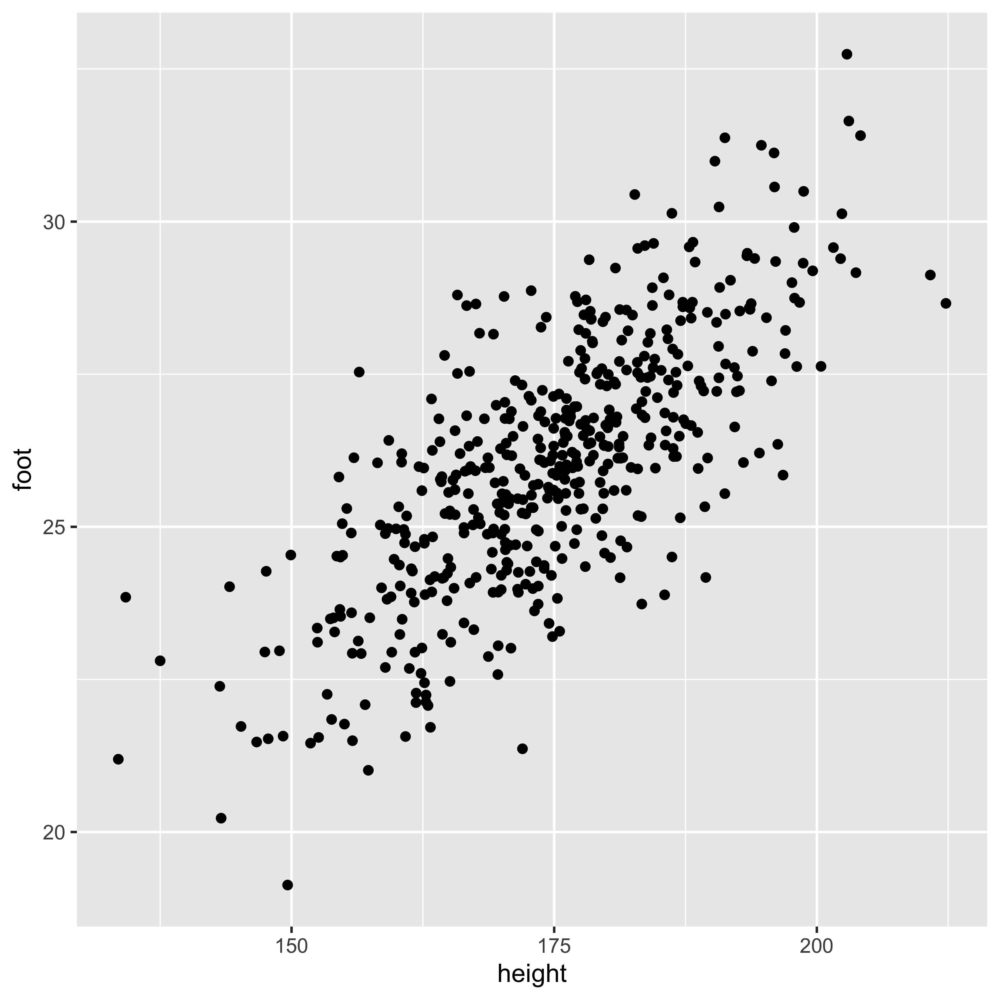
Covariance
Generally, bivariate numerical data are often summarized in terms of their mean and covariance matrix. Since we are avoiding dealing with linear algebra in this class, we will not deal with this matrix directly. Instead we will consider the different components of a covariance matrix for a bivariate distribution.
The elements of a covariance matrix (usually denoted with a capital sigma: \(\Sigma\)) for two variables \(x\) and \(y\) are \(\sigma_x^2\) (the variance of \(x\)), \(\sigma_y^2\) (the variance of \(y\)), and \(\sigma_{xy}\) the covariance of \(x\) and \(y\).
\(\Sigma_{xy} = \begin{bmatrix}\sigma_x^2 & \sigma_{xy} \\ \sigma_{xy} & \sigma_y^2\end{bmatrix}\)
The covariance of two random variables (\(\sigma_{xy}\)) is defined as the expectation of the products of deviations from the mean:
\(\sigma_{XY} = \operatorname{Cov}[X,Y] = \mathbb{E}\left[{(X-\mu_X)(Y-\mu_Y)}\right] = \int\limits_X \int\limits_Y (X-\mu_X)(Y-\mu_Y) P(X,Y) \, dX \, dY\)
It is worth noting the similarity between the definition of the variance and the definition of the covariance:
\(\operatorname{Var}[X] = \mathbb{E}\left[{(X-\mu_X)^2}\right]= \mathbb{E}\left[{(X-\mu_X)(X-\mu_X)}\right]\)
The similarity here is that the variance of \(X\) can be thought of as the covariance of \(X\) with itself:
\(\operatorname{Var}[X] = \operatorname{Cov}[X,X]\)
What will the definition of \(\operatorname{Cov}[X,Y]\) do?
- \((X-\mu_X)(Y-\mu_Y)\) will be positive for combinations of X and Y that both deviate in the same direction from their respective means (either both higher, or both lower, than their means)
- \((X-\mu_X)(Y-\mu_Y)\) will be negative for combinations of X and Y that deviate in different directions from their means (X is higher than its mean, Y is lower)
- Consequently, if combinations of X and Y that deviate in the same direction are more common than those that deviate in different directions, the covariance will be positive; vice versa for negative; and same-direction and different-direction deviation pairs are equally common, the covariance will be zero.
cvs = c(-0.8, 0, 0.8)
df = data.frame()
for(cv in cvs){
df = rbind(df, data.frame(MASS::mvrnorm(n=500, c(0,0), matrix(c(1, cv, cv, 1), 2, 2)),
Covariance=as.character(cv)))
}
ggplot(df, aes(X1,X2))+facet_grid(.~Covariance)+geom_point()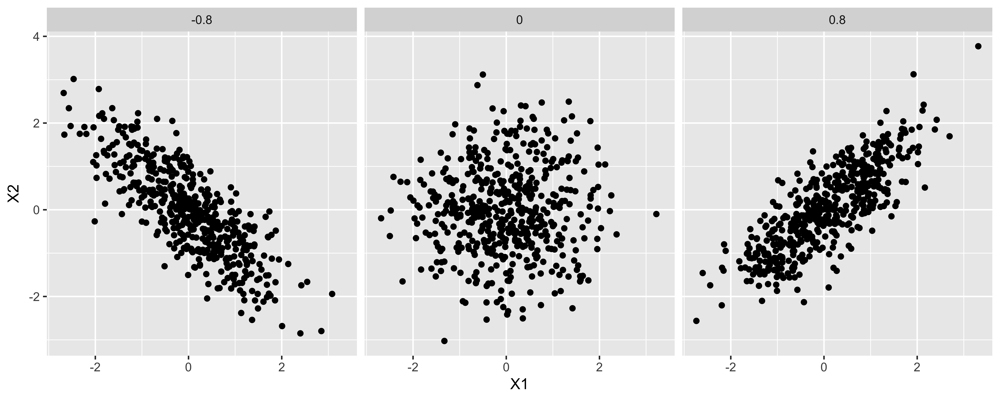
- If the overall variance of X or Y changes, the scale of the scared deviations of them from their means will change, and consequently, so will the covariance. This means that the covariance measures both the strength of the linear relationship between X and Y, as well as the overall spread of X and Y.
Estimating covariance.
We estimate the variance from a sample by summing up the squared deviations to yield a “sum of squares,” which we divide by n-1 to obtain an estimator for the variance (\(s_X^2\)):
\(s_X^2 = \frac{\sum\limits_{i=1}^n (x_i - \bar x)(x_i - \bar x)}{n-1}\)
n = nrow(df.cm)
(SS.h = sum((df.cm$height - mean(df.cm$height))^2))## [1] 78177.3c(SS.h/(n-1), var(df.cm$height))## [1] 156.6679 156.6679Similarly, we calculate the sample covariance by calculating the “sum of products” of the deviations of X and Y from their respective means, then dividing by n-1.
n = nrow(df.cm)
(SP.hf = sum((df.cm$height - mean(df.cm$height))*
(df.cm$foot - mean(df.cm$foot))))## [1] 9571.319c(SP.hf/(n-1), cov(df.cm$height, df.cm$foot))## [1] 19.181 19.181You might wonder: why are we dividing by n-1, when we estimate two parameters (mean of x and mean of y). The answer comes from thinking about each observation as a two element vector (x,y), we have n of these vectors, and we estimate the mean the mean of those vectors – a two element mean.
As discussed earlier, the covariance scales with the variance of X and Y. Generally, though, we want a measure of association that is scaled to the spread of the two variables, scaling the covariance yields the correlation.
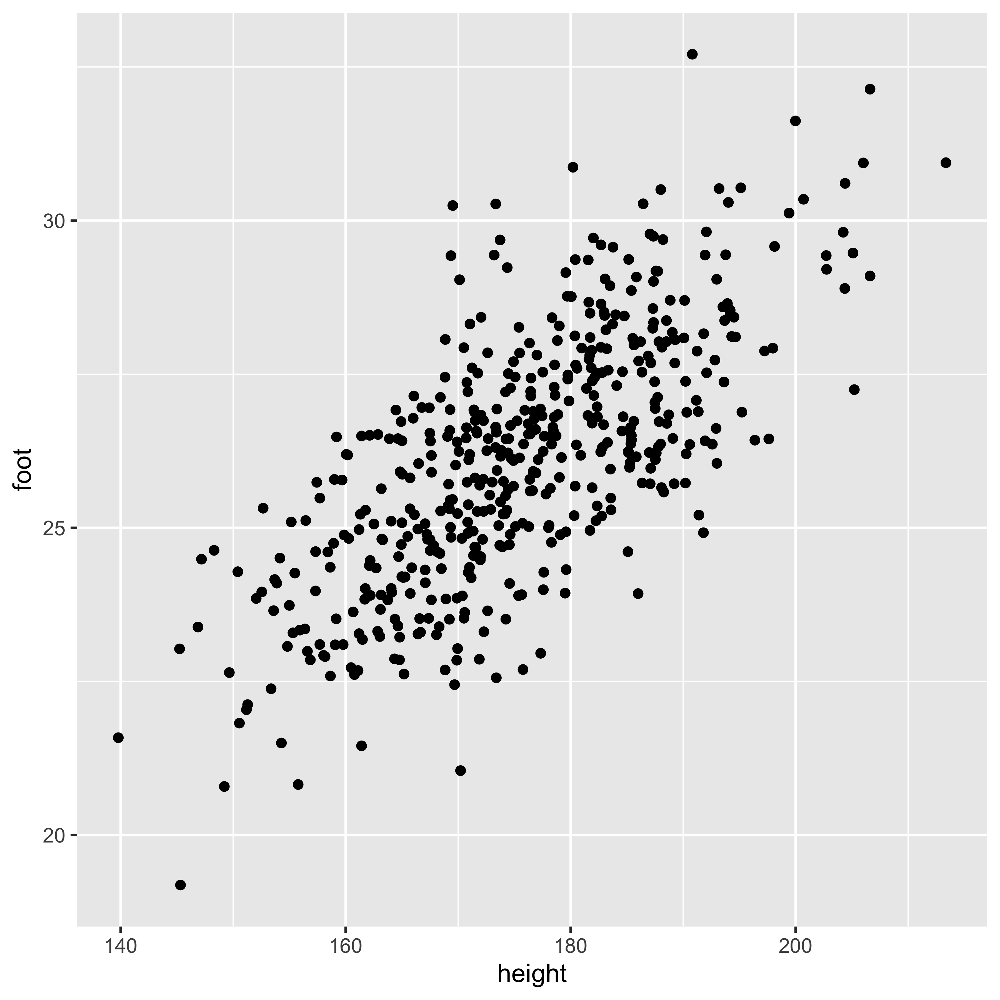
Correlation
The correlation is a scaled/normalized covariance, which we calculate by dividing the covariance of x and y by their standard deviations. The population correlation (usually referred to as the greek letter “rho” \(\rho_{XY}\)) can be calculated from the population covariance (\(\sigma_{XY}\)), and population standard deviations of X and Y (\(\sigma_X\), \(\sigma_Y\)):
\(\rho_{XY} = \frac{\sigma_{XY}}{\sigma_X\,\sigma_Y}\)
And we can calculate the sample correlation (\(r_{XY}\)) – which we use as the estimator of population correlation – the same way, using the sample covariance and sample standard deviations:
\(\hat \rho_{XY} = r_{XY} = \frac{s_{XY}}{s_X\,s_Y}\)
In R, we just use the cor function to calculate the sample correlation.
(r.hf = cor(df.cm$height, df.cm$foot))## [1] 0.7137651The correlation is a scale-free measure of covariance – since we calculate it by dividing by the standard deviations of X and Y, it has lost any units X and Y had. This has some benefits and costs. The benefits are: The correlation will not care what units X was measured in (centimeters? inches? parsecs?), so we get a measure of the strength and direction of the linear relationship that abstracts away from these units. The cost is that we got rid of the physical units and thus our measure is further removed from reality.
Correlation as the slope of z-scores
One helpful way to think about the correlation is as the slope of the z-scores, or the slope in standard deviations. If the correlation between x and y is 0.8, that means that for an x that is 1 sd above the mean of x, we expect the y to be 0.8 sds above the mean of y. (more on this in OLS regression
Coefficient of determination
If we square the correlation, we get “R-squared,” or the “coefficient of determination,” which roughly describes what proportion of the overall variance is shared (more on this when we get to regression).
Ordinary Least-Squares (OLS) Regression
In OLS regression we have one numerical response variable (\(y\)), and one numerical explanatory variable (\(x\)), and we model the relationship between the two as a line plus some error in (\(y\)):
\[y_i = \beta_0 + \beta_1 x_i + \varepsilon_i\], where
\[\varepsilon_i \sim \operatorname{Normal}(0, \sigma_\varepsilon)\]
library(ggplot2)
x = seq(-5,5,by=0.1)
b0 = -2
b1 = 1/3
y.p = b0 + b1*x
e = rnorm(length(x), 0, 0.4)
df = data.frame(x = x, y = y.p, e = e)
ggplot(df, aes(x,y))+
geom_line(size=1.5, color="blue")+
geom_point(aes(y=y+e), size=3)+
geom_linerange(aes(x=x, ymin=y, ymax=y+e), color="red")Here we show the individual \(x,y\) points as black dots, the underlying linear relationship in blue, and the error/residual (deviations in of \(y\) from the exact line) in red. A few things are noteworthy about the relationship this model assumes:
The relationship between \(y\) and \(x\) is a line. We can always fit a line to some data, but the fact that we can do so does not mean that the relationship really is linear, or that a line fit to the relationship tells you anything meaningful at all. This is a strong structural assumption made in regression modeling, and you should always check (at least by looking at a scatterplot), that this is an adequate description of the data.
There is error only in \(y\); there is no error in the \(x\) values. This assumption is violated often, without particularly adverse consequences; however, one should be thoughtful when assigning \(x\) and \(y\) variables. As a consequence, the regression line for \(y\) as a function of \(x\) is different than the regression line for \(x\) as a function of \(y\) (for more, see the difference between y~x and x~y). The correlation, on the other hand, is symmetric: \(r_{xy} = r_{yx}\).
\(y\) value errors for different points are independent and identically distributed. This means that errors should not be correlated (as usually happens in timeseries data, or otherwise structured data), and that the distribution of errors does not change with \(x\) (errors are “homoscedastic”). Small violations of these assumptions often do not have much of an effect, but sometimes they do. We will talk about this at length later.
Errors are normally distributed. While this assumption is not necessary for calculating the least squares \(B\) values, it is necessary for some of the null hypothesis tests we will be using to assess statistical significance of estimated model parameters.
Regression terminology
Let’s start with some terminology:
\(y_i = B_0 + B_1 x_i + \varepsilon_i\)
\(B_0\) is the y intercept: the value of \(y\) when \(x = 0\). It shifts the line up and down along the \(y\) axis.
\(B_1\) is the slope: how many units of \(y\) you gain/lose per unit change in \(x\). \(B_1\) is in the units \(y/x\). E.g., if we are predicting women’s height from the height of her mother – both in inches – and we find a slope of 0.8, that means that (all else equal) for every inch taller that a mother is, we expect the daughter to be 0.8 inches taller.
The identity line is \(y=x\) (in other words: \(B_0=0\), \(B_1=1\)).
\(\varepsilon_i\) is the residual, or error, of the \(i\)th point: how far the real \(y\) value differs from the \(y\) value we predict using our linear function of \(x\). In all regression, the goal is to estimate \(B\) so as to minimize the sum of the squares of these residuals – the sum of squared errors.
Estimating the regression line.
Let’s generate some fake data, and then fit a line to them.
IQ = rnorm(50, 100, 15)
GPA = pmax(1, pmin(4.3, round((IQ-100)/15*0.5+2.8+rnorm(length(IQ),0,0.7), 1)))
iq.gpa = data.frame(iq=IQ, gpa=GPA)
g1 = ggplot(iq.gpa, aes(iq,gpa))+
geom_point(size=2)
( lm.fit = lm(data = iq.gpa, gpa~iq) )##
## Call:
## lm(formula = gpa ~ iq, data = iq.gpa)
##
## Coefficients:
## (Intercept) iq
## -0.09590 0.02931This fit gives us an intercept (\(B_0\)) and a slope (\(B_1\)) for the line that minimizes the sum of squared errors.
Math behind estimating the regression line
When estimating the regression line we are interested in finding the slope (\(B_1\)) and intercept (\(B_0\)) values that will make the predicted y values \(\hat y_i = B_0 + B_1 x_i\) as close to actual \(y_i\) values as possible. Formally, we want to find the \(B\) values that minimize the sum of squared errors: \(\sum (y_i - \hat y_i)^2\).
It is useful to work through the algebra that allows us to obtain least squares estimates of the slope and intercept from the summary statistics of x and y and their correlation.
Mean of x and y:
- \(\bar x = \sum\limits_{i=1}^n x_i\), and
- \(\bar y = \sum\limits_{i=1}^n y_i\).
Standard deviations of x and y (by way of the sum of squares of x and y):
- \(\operatorname{SS}[x] = \sum\limits_{i=1}^n (x_i - \bar x)^2\)
- \(s_x = \sqrt{\frac{1}{n-1} \operatorname{SS}[x]}\)
- \(\operatorname{SS}[y] = \sum\limits_{i=1}^n (y_i - \bar y)^2\)
- \(s_y = \sqrt{\frac{1}{n-1} \operatorname{SS}[y]}\)
The correlation of x and y by way of their sum of products and their covariance:
- \(\operatorname{SP}[x,y] = \sum\limits_{i=1}^n (x_i - \bar x)(y_i - \bar y)\)
- \(s_{xy} = \frac{1}{n-1} \operatorname{SP}[x,y]\)
- \(r_{xy} = \frac{s_{xy}}{s_x s_y}\)
n = nrow(iq.gpa)
m.x = mean(iq.gpa$iq)
m.y = mean(iq.gpa$gpa)
SS.x = sum((iq.gpa$iq-m.x)^2)
s.x = sd(iq.gpa$iq)
SS.y = sum((iq.gpa$gpa-m.y)^2)
s.y = sd(iq.gpa$gpa)
SP.xy = sum((iq.gpa$iq-m.x)*(iq.gpa$gpa-m.y))
s.xy = cov(iq.gpa$iq, iq.gpa$gpa)
r.xy = cor(iq.gpa$iq, iq.gpa$gpa)The least squares estimate of the slope is obtained by rescaling the correlation (the slope of the z-scores), to the standard deviations of y and x:
\(B_1 = r_{xy}\frac{s_y}{s_x}\)
b1 = r.xy*s.y/s.xThe least squares estimate of the intercept is obtained by knowing that the least-squares regression line has to pass through the mean of x and y. Consequently, \(B_1 \bar x + B_0 = \bar y\), and we can solve for the intercept as:
\(B_0 = \bar y - B_1 \bar x\)
b0 = m.y - b1*m.xWith these estimates we can obtain the predicted y values for each observed x:
\(\hat y_i = B_0 + B_1 x_i\)
iq.gpa$gpa.hat = iq.gpa$iq*b1 + b0And from these we can calculate the individual residuals, the deviation of each y value from the y value predicted by the regression line:
\(e_i = y_i - \hat y_i\)
iq.gpa$residual = iq.gpa$gpa - iq.gpa$gpa.hatFrom these residuals we can calculate the sum of squared error – that is, the sum of squared residuals:
\(\operatorname{SS}[e] = \sum\limits_{i=1}^n e_i^2\)
SS.error = sum(iq.gpa$residual^2)And thus, we can estimate the standard deviation of the residuals by dividing the sum of squared error by \(n-2\) to get the variance, and then taking the square root. We use \(n-2\) because those are the degrees of freedom that are left after we estimate two parameters (the slope and intercept):
\(s_e = \sqrt{\frac{1}{n-2} \operatorname{SS}[e]}\)
s.e = sqrt(SS.error/(n-2))Standard errors of regression coefficients
We can get the (marginal) standard errors of the slope and intercept using the summary function to get further details of the model fit:
summary(lm.fit)##
## Call:
## lm(formula = gpa ~ iq, data = iq.gpa)
##
## Residuals:
## Min 1Q Median 3Q Max
## -1.4882 -0.3912 -0.1421 0.4354 1.7348
##
## Coefficients:
## Estimate Std. Error t value
## (Intercept) -0.095899 0.688319 -0.139
## iq 0.029315 0.006719 4.363
## Pr(>|t|)
## (Intercept) 0.89
## iq 6.78e-05 ***
## ---
## Signif. codes:
## 0 '***' 0.001 '**' 0.01 '*' 0.05 '.'
## 0.1 ' ' 1
##
## Residual standard error: 0.6986 on 48 degrees of freedom
## Multiple R-squared: 0.2839, Adjusted R-squared: 0.269
## F-statistic: 19.03 on 1 and 48 DF, p-value: 6.783e-05Math behind regression line errors
It is worth looking at the equations used to calculate the marginal standard errors for the slope and intercept. Both standard errors increase with greater standard deviations of the residuals, and decrease with sample size; however, they also change in interesting ways with the standard deviation of \(x\), and the mean of \(x\).
The standard error of the slope is proportional to the standard deviation of the residuals, inversely proportional to the square root of sample size, and also inversely proportion to the standard deviation of \(x\). This last fact is perhaps most intriguing, but should make sense: the more spread-out the x values are, the greater the change in y due to changes in x (rather than error), thus the better our estimate of the slope.
\(s\{B_1\} = s_e \frac{1}{s_x \sqrt{n-1}}\)
s.b1 = s.e/(s.x*sqrt(n-1))The standard error of the intercept is more interesting. Remember that we calculate the intercept by relying on the fact that the least squares regression line must go through the mean of y and the mean of x. Consequently, we calculate the standard error of the intercept by summing the variance due to error in estimating the mean y value (which is inversely proportional to n), and the variance due to extrapolating the line with our uncertainty in the slope to x=0 (which is proportional to the squared standard error of the slope and the squared distance of the mean of x from 0).
\(s\{B_0\} = \sqrt{\left({\frac{s_e}{\sqrt(n)}}\right)^2 + \left({\bar x s_e \frac{1}{s_x \sqrt{n-1}}}\right)^2 }\)
s.b0 = s.e*sqrt(1/n + m.x^2/s.x^2/(n-1))Confidence intervals and tests for regression coefficients
The summary function by default returns the t-test statistic and p-values for comparing parameter values to 0, which we can extract via the coef function:
(s.lm.fit = summary(lm.fit))##
## Call:
## lm(formula = gpa ~ iq, data = iq.gpa)
##
## Residuals:
## Min 1Q Median 3Q Max
## -1.4882 -0.3912 -0.1421 0.4354 1.7348
##
## Coefficients:
## Estimate Std. Error t value
## (Intercept) -0.095899 0.688319 -0.139
## iq 0.029315 0.006719 4.363
## Pr(>|t|)
## (Intercept) 0.89
## iq 6.78e-05 ***
## ---
## Signif. codes:
## 0 '***' 0.001 '**' 0.01 '*' 0.05 '.'
## 0.1 ' ' 1
##
## Residual standard error: 0.6986 on 48 degrees of freedom
## Multiple R-squared: 0.2839, Adjusted R-squared: 0.269
## F-statistic: 19.03 on 1 and 48 DF, p-value: 6.783e-05coef(s.lm.fit) # returns the matrix of coefficients, errors, t-stats, and p-values## Estimate Std. Error
## (Intercept) -0.09589893 0.688318743
## iq 0.02931482 0.006719284
## t value Pr(>|t|)
## (Intercept) -0.1393234 8.897775e-01
## iq 4.3627893 6.783065e-05# we can index that matrix to get specific rows and columns out:
coef(s.lm.fit)[c("(Intercept)"), c("t value", "Pr(>|t|)")]## t value Pr(>|t|)
## -0.1393234 0.8897775coef(s.lm.fit)[c("iq"), c("t value", "Pr(>|t|)")]## t value Pr(>|t|)
## 4.362789e+00 6.783065e-05Similarly, we can get confidence intervals on these coefficients using confint, which calculates the standard t-distribution confidence intervals using the standard errors.
confint(lm.fit, "(Intercept)", 0.95)## 2.5 % 97.5 %
## (Intercept) -1.479857 1.288059confint(lm.fit, "iq", 0.95)## 2.5 % 97.5 %
## iq 0.01580479 0.04282484Calculating t-tests and intervals
Just as in the case of all of our t-tests for various mean comparisons, we are going to use the t-distribution to obtain p-values and get confidence intervals.
T-test for slope being non-zero:
t.b1 = (b1-0)/s.b1
df = n-2
# n-2 because we lose two degrees of freedom for the slope and intercept when calculating the sample standard deviation of the residuals
2*pt(-abs(t.b1), df) #two-tail p value## [1] 6.783065e-05Confidence interval on the slope:
q = 0.95
t.crit = qt((1-q)/2,df)
b1 + c(1,-1)*t.crit*s.b1## [1] 0.01580479 0.04282484T-test for intercept being different from some null (0 by default). Note that it is quite rare to test for some null intercept value; we do something analogous in ANCOVA, but for a simple regression this is rarely a useful question to ask.
t.b0 = (b0-0)/s.b0
df = n-2
2*pt(-abs(t.b0), df) #two-tail p value## [1] 0.8897775Confidence interval on the intercept:
q = 0.95
t.crit = qt((1-q)/2,df)
b0 + c(1,-1)*t.crit*s.b0## [1] -1.479857 1.288059y~x vs x~y vs principle component line
Let’s consider the fake IQ-GPA from our overview of OLS regression again.
library(ggplot2)
IQ = rnorm(50, 100, 15)
GPA = pmax(1, pmin(4.3, round((IQ-100)/15*0.5+2.8+rnorm(length(IQ),0,0.7), 1)))
iq.gpa = data.frame(iq=IQ, gpa=GPA)
g1 = ggplot(iq.gpa, aes(iq,gpa))+
geom_point(size=2)
g1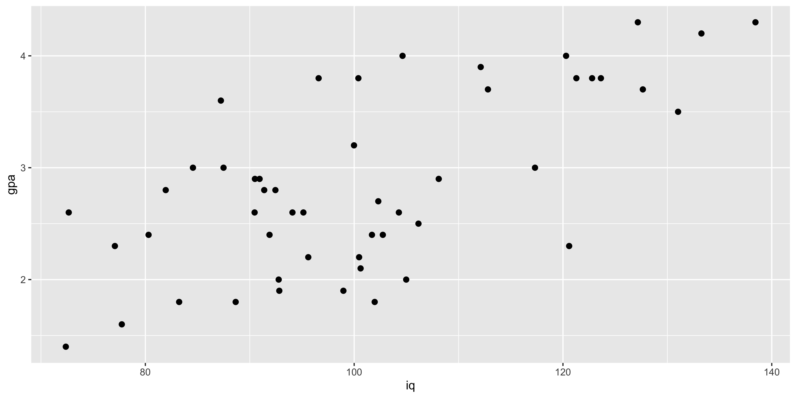
We can do two sorts of regression here: GPA as a function of IQ, or IQ as a function of GPA:
( lm.g.i = lm(data=iq.gpa, gpa~iq) )##
## Call:
## lm(formula = gpa ~ iq, data = iq.gpa)
##
## Coefficients:
## (Intercept) iq
## -0.36541 0.03183( lm.i.g = lm(data=iq.gpa, iq~gpa) )##
## Call:
## lm(formula = iq ~ gpa, data = iq.gpa)
##
## Coefficients:
## (Intercept) gpa
## 62.21 13.63Note that the slopes are different, and critically, they are not inverses of each other. You might imagine that the IQ/GPA slope will be the inverse of the GPA/IQ slope, but they are not:
c(1/coef(lm.g.i)['iq'], coef(lm.i.g)['gpa'])## iq gpa
## 31.41480 13.62728Why are they different?
\(B\{\frac{y}{x}\} = r_{xy}\frac{s_y}{s_x}\)
\(B\{\frac{x}{y}\} = r_{xy}\frac{s_x}{s_y}\)
Consequently, the slopes will be inverses of each other only if the correlation is 1. But why is this so?
Remember, the y~x regression line is the line that minimizes squared error in y, and considers there to be no error in x. Similarly, the x~y regression line minimizes squared error in x and considers there to be no error in y. This discrepancy yields potentially very different slopes.
Let’s look at the two lines, along with the “principle component” line that minimizes squared error orthogonal to the line (which is the intuitive line of best fit for most people).
m.y = mean(iq.gpa$gpa)
m.x = mean(iq.gpa$iq)
s.y = sd(iq.gpa$gpa)
s.x = sd(iq.gpa$iq)
b1.y.x = coef(lm.g.i)['iq']
b0.y.x = coef(lm.g.i)['(Intercept)']
b1.x.y = 1/coef(lm.i.g)['gpa']
b0.x.y = m.y - b1.x.y*m.x
pc.load = prcomp(iq.gpa, scale=T, retx=T)
b1.yx = pc.load$rotation[2,1]/pc.load$rotation[1,1]*s.y/s.x
b0.yx = m.y - b1.yx*m.x
iq.gpa$yh.y.x = b1.y.x*iq.gpa$iq + b0.y.x
iq.gpa$xh.x.y = coef(lm.i.g)['gpa']*iq.gpa$gpa + coef(lm.i.g)['(Intercept)']
iq.gpa$xh.yx = pc.load$x[,1]*pc.load$rotation[2,1]*s.x+m.x
iq.gpa$yh.yx = pc.load$x[,1]*pc.load$rotation[1,1]*s.y+m.y
ggplot(iq.gpa, aes(x=iq, y=gpa))+
geom_abline(intercept = b0.y.x, slope=b1.y.x, color="blue", size=1.5)+
geom_abline(intercept = b0.x.y, slope=b1.x.y, color="red", size=1.5)+
geom_abline(intercept = b0.yx, slope=b1.yx, color="gray", size=1.5)+
geom_point(size=2.5)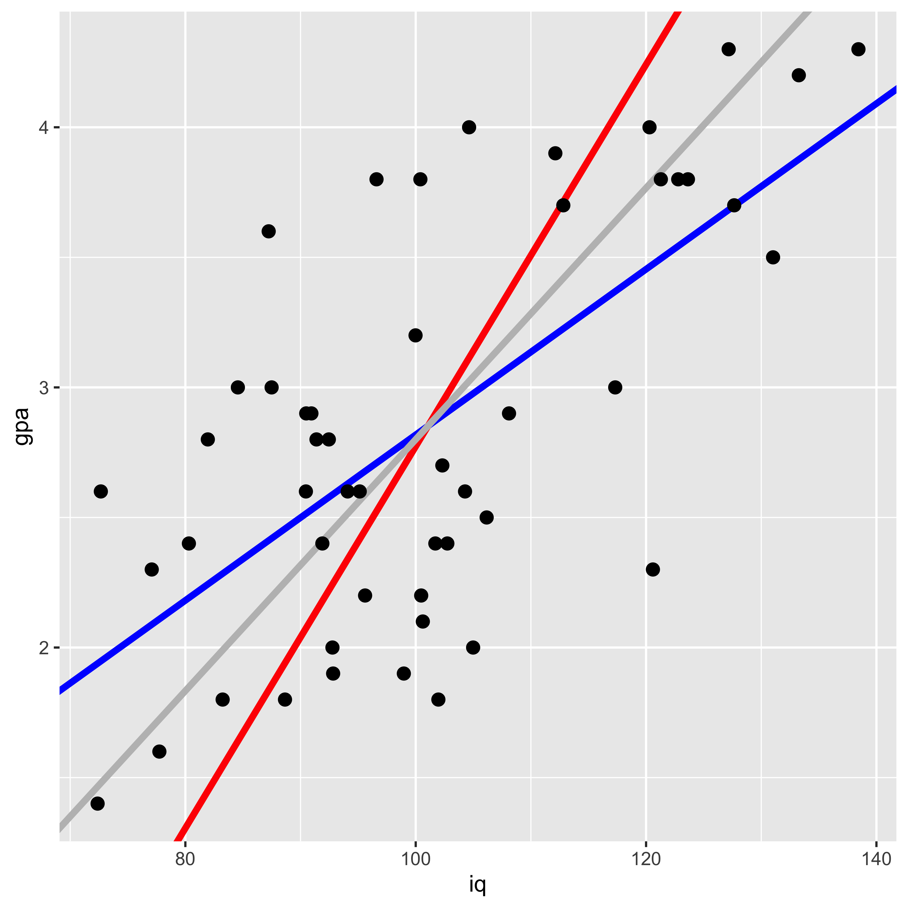
Here the blue line shows the gpa~iq fit, the red line shows iq~gpa, and the gray line shows the principle component line (which is the intuitive line most people would draw to describe the best fit).
Why are they different? They are minimizing different squared errors. The gpa~iq line minimizes error in gpa, the iq~gpa line minimizes error in iq, and the principle component line minimizes error orthogonal to the line (counting both iq and gpa deviations as error).
g2 <- ggplot(iq.gpa, aes(x=iq, y=gpa))+
geom_abline(intercept = b0.y.x, slope=b1.y.x, color="blue", size=1.5)+
geom_segment(aes(x=iq, y=gpa, xend=iq, yend=yh.y.x), color="blue")+
geom_point(size=2.5)
g3 <- ggplot(iq.gpa, aes(x=iq, y=gpa))+
geom_abline(intercept = b0.x.y, slope=b1.x.y, color="red", size=1.5)+
geom_segment(aes(x=iq, y=gpa, yend=gpa, xend=xh.x.y), color="red")+
geom_point(size=2.5)
g4 <- ggplot(iq.gpa, aes(x=iq, y=gpa))+
geom_abline(intercept = b0.yx, slope=b1.yx, color="gray", size=1.5)+
geom_segment(aes(x=iq, y=gpa, yend=yh.yx, xend=xh.yx), color="gray")+
geom_point(size=2.5)
library(gridExtra)
grid.arrange(g2,g3,g4,ncol=3)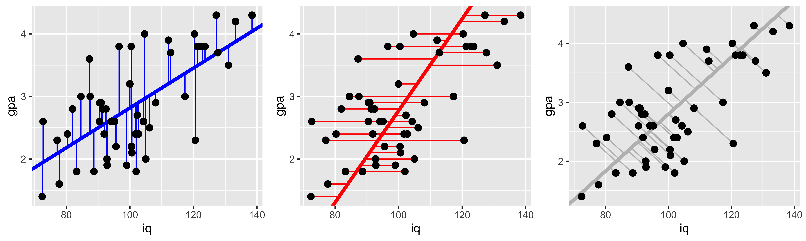
Partitioning variance and the coefficient of determination.
Let’s start with the fake IQ-GPA data from our discussion of ordinary least squared regression.
library(ggplot2)
IQ = rnorm(50, 100, 15)
GPA = pmax(1, pmin(4.3, round((IQ-100)/15*0.5+2.8+rnorm(length(IQ),0,0.7), 1)))
iq.gpa = data.frame(iq=IQ, gpa=GPA)
g1 = ggplot(iq.gpa, aes(iq,gpa))+
geom_point(size=2)
( lm.fit = lm(data = iq.gpa, gpa~iq) )##
## Call:
## lm(formula = gpa ~ iq, data = iq.gpa)
##
## Coefficients:
## (Intercept) iq
## 0.5128 0.0219Linear regression brings to the forefront a running theme in classical statistics: partitioning the overall variance of measurements into the variance that may be attributed to different sources. This kind of partitioning is most commonly associated with an “analysis of variance,” which is a particular way of analyzing the results of a linear regression.
In R, we can get the ANOVA results for a given linear model fit via the anova command:
anova(lm.fit)## Analysis of Variance Table
##
## Response: gpa
## Df Sum Sq Mean Sq F value
## iq 1 4.3624 4.3624 10.118
## Residuals 48 20.6954 0.4312
## Pr(>F)
## iq 0.002574 **
## Residuals
## ---
## Signif. codes:
## 0 '***' 0.001 '**' 0.01 '*' 0.05 '.'
## 0.1 ' ' 1Tha ANOVA table shows the degrees of freedom, sums of squares, and other values for different sources of variance in y. The two sources of variance in play in our simple regression are (1) variance in GPA that can be attributed to variance in IQ, and its impact on GPA, and (2) variance in GPA that we cannot account for with our predictors (here just IQ) – the left over variance of the residuals.
These sums of squares are not quite actual variance estimates, they are variance estimates unnormalized by the number of data points that went into those estimates (the sums of squares, rather than the sums of squares divided by the number of things that go into that sum). However, the number of elements that goes into each of these sums is the same, so we can compare them. For instance we can divide the sum of squares attributed to IQ, by the sum of IQ and residual sums of squares, to calculate the proportion of the variance in GPA that can be explained by IQ:
ss.iq = anova(lm.fit)['iq','Sum Sq']
ss.error = anova(lm.fit)['Residuals','Sum Sq']
(r.sq = ss.iq/(ss.iq+ss.error))## [1] 0.1740935This “proportion of variance explained,” or “coefficient of determination” can also be calculated by squaring the sample correlation (for this simple case of one response and one explanatory variable):
cor(iq.gpa$iq, iq.gpa$gpa)^2## [1] 0.1740935So what are these sums of squares?
Calculating sums of squares.
The basic partitioning of sums of squares follows the logic that the “total sum of squares” is equal to the sum of all the sums of squares of different candidate sources. In our case, the “total” sum of squares is the total variation of \(y\) (GPA) around its mean:
\(\text{SST} = \operatorname{SS}[y] = \sum\limits_{i=1}^n (y_i - \bar y)^2\)
m.y = mean(iq.gpa$gpa)
iq.gpa$gpa.hat = predict(lm.fit, newdata = iq.gpa)
( SS.y = sum((iq.gpa$gpa-m.y)^2) )## [1] 25.0578The sum of squares of the “regression,” that is – the sum of squares that can be explained by the linear model we fit, can be calculated as the sum of the squared deviations of the predicted y values, from the mean of y:
\(\text{SSR} = \operatorname{SS}[\hat y] = \sum\limits_{i=1}^n (\hat y_i - \bar y)^2\)
( SS.yhat = sum((iq.gpa$gpa.hat - m.y)^2) )## [1] 4.362399The sum of squares of the residuals (or the error), is the sum of squared deviations of the actual y values from those predicted by the linear regression.
\(\text{SSE} = \operatorname{SS}[e] = \sum\limits_{i=1}^n (y_i - \hat y_i)^2\)
( SS.error = sum((iq.gpa$gpa - iq.gpa$gpa.hat)^2) )## [1] 20.6954We can generate a plot of these. The black line segments indicate the deviation of y values from the mean y value (black horizontal line); the blue line segments indicates the deviation of the predicted y value (blue slope) from the mean y value; and the red segments indicate the error – the deviation of the actual y value from the predicted y value.
ggplot(iq.gpa, aes(x=iq, y=gpa))+
geom_point(size=5)+
geom_hline(yintercept = m.y)+
geom_abline(intercept=coef(lm.fit)["(Intercept)"], slope=coef(lm.fit)["iq"], color="blue", size=1.5)+
geom_linerange(ymin = m.y, mapping = aes(x=iq, ymax=gpa), color="black")+
geom_linerange(ymin=m.y, aes(x=iq-0.35, ymax=gpa.hat), color="blue")+
geom_linerange(aes(x=iq+0.35, ymin=gpa, ymax=gpa.hat), color="red")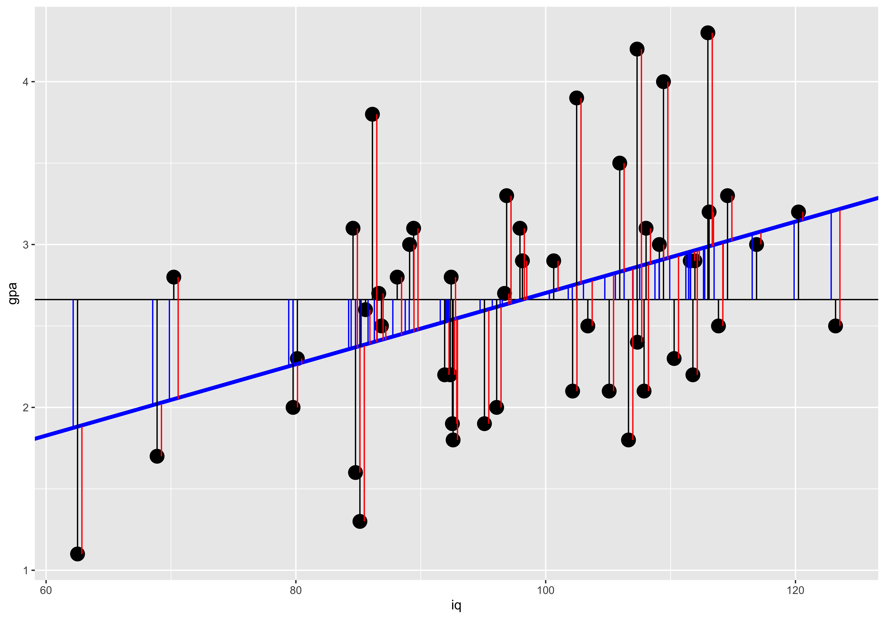
The partitioning of the deviation of a given y value from the mean into the deviation of the corresponding regression prediction from the mean, and the deviation of the y value from the regression prediction maps onto the partition of sums of squares:
SST = SSR + SSE
c(SS.y, SS.yhat+SS.error)## [1] 25.0578 25.0578Significance of linear relationship.
Here we will work with the fake IQ-GPA data we generated when talking about Ordinary Least-Squares (OLS) Regression.
library(ggplot2)
IQ = rnorm(50, 100, 15)
GPA = pmax(1, pmin(4.3, round((IQ-100)/15*0.5+2.8+rnorm(length(IQ),0,0.7), 1)))
iq.gpa = data.frame(iq=IQ, gpa=GPA)
g1 = ggplot(iq.gpa, aes(iq,gpa))+
geom_point(size=2)
print(g1)
( lm.fit = lm(data = iq.gpa, gpa~iq) )##
## Call:
## lm(formula = gpa ~ iq, data = iq.gpa)
##
## Coefficients:
## (Intercept) iq
## -1.37996 0.04014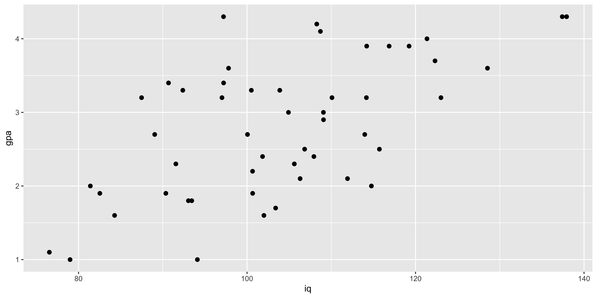
There are many equivalent ways to ascertain whether a single-variable ordinary least-squares regression is “significant.”
Significance of slope.
We already saw that we can test whether the slope is significantly different from 0 by calculating a t statistic by using the estimated slope and its standard error:
\(t_{n-2} = \frac{B_1}{s\{B_1\}}\).
This is the statistic R calculates when estimating the significance of the coefficient from the linear model summary:
coef(summary(lm.fit))['iq',]## Estimate Std. Error t value
## 4.014378e-02 7.567184e-03 5.304983e+00
## Pr(>|t|)
## 2.832145e-06Significance of pairwise correlation
Similarly, we can obtain this same t statistic via the pairwise correlation via:
\(t_{n-2} = r_{xy}\sqrt{\frac{n-2}{1-r_{xy}^2}}\)
We can obtain this test of the significance of a pairwise correlation via the cor.test function:
cor.test(iq.gpa$iq, iq.gpa$gpa)##
## Pearson's product-moment
## correlation
##
## data: iq.gpa$iq and iq.gpa$gpa
## t = 5.305, df = 48, p-value =
## 2.832e-06
## alternative hypothesis: true correlation is not equal to 0
## 95 percent confidence interval:
## 0.3967420 0.7580253
## sample estimates:
## cor
## 0.6079522Significance of variance partition.
Finally, we can calculate an F statistic based on the partition of the variance attributable to the regression as:
\(F_{(1,n-2)} = \frac{\operatorname{SS}[\hat y]}{\operatorname{SS}[error]/(n-2)}\)
This is the statistic we get from the anova command:
anova(lm.fit)['iq',]## Analysis of Variance Table
##
## Response: gpa
## Df Sum Sq Mean Sq F value Pr(>F)
## iq 1 15.323 15.323 28.143 2.832e-06
##
## iq ***
## ---
## Signif. codes:
## 0 '***' 0.001 '**' 0.01 '*' 0.05 '.'
## 0.1 ' ' 1Which we can calculate manually as:
SS.yhat = anova(lm.fit)['iq', 'Sum Sq']
SS.error = anova(lm.fit)['Residuals', 'Sum Sq']
df.1 = 1 # anova(lm.fit)['iq', 'Df']
df.2 = nrow(iq.gpa)-2 # anova(lm.fit)['Residuals', 'Df']
( F = (SS.yhat/df.1) / (SS.error/df.2) )## [1] 28.14285( p = 1-pf(F, df.1, df.2) )## [1] 2.832145e-06Isomorphism with one response and one predictor
In this special case of a linear regression with just one explanatory variable, all of these are equivalent. The t statistic for the correlation is the t-statistic for the coefficient, and that t-value squared is the F value from the analysis of variance. The resulting p-values are also the same.
# t statistics from slope and correlation
(ts = c(coef(summary(lm.fit))['iq', 't value'],
cor.test(iq.gpa$iq, iq.gpa$gpa)$statistic) )## t
## 5.304983 5.304983# squared t statistics and anova F value
c(ts^2, anova(lm.fit)['iq', 'F value'])## t
## 28.14285 28.14285 28.14285# p values from slope, correlation, and anova
c(coef(summary(lm.fit))['iq', 'Pr(>|t|)'],
cor.test(iq.gpa$iq, iq.gpa$gpa)$p.value,
anova(lm.fit)['iq', 'Pr(>F)'])## [1] 2.832145e-06 2.832145e-06
## [3] 2.832145e-06This isomorphism between the test for the pairwise correlation (cor.test(x,y)), the test of the estimated regression slope (summary(lm(y~x))), and the test for the variance in y attributable to x (anova(lm(y~x))), is specific to the simple case of one response and one explanatory variable. With multiple explanatory variables (multiple regression) these will all yield different results (as they all ask subtly different questions – more on this when we get to multiple regression).
Regression prediction.
We will start our discussion of prediction intervals with the same fake IQ-GPA data that we covered in OLS regression.
library(ggplot2)
IQ = rnorm(50, 100, 15)
GPA = pmax(1, pmin(4.3, round((IQ-100)/15*0.5+2.8+rnorm(length(IQ),0,0.7), 1)))
iq.gpa = data.frame(iq=IQ, gpa=GPA)
g1 = ggplot(iq.gpa, aes(iq,gpa))+
geom_point(size=2)
( lm.fit = lm(data = iq.gpa, gpa~iq) )##
## Call:
## lm(formula = gpa ~ iq, data = iq.gpa)
##
## Coefficients:
## (Intercept) iq
## 0.44571 0.02496Now that we have estimated the best fitting intercept (\(B_0\)) and slope (\(B_1\)), we can ask what y values we predict for an arbitrary x.
There are two kinds of predictions we might make: a prediction for the mean y value at a given x, and a prediction for a new data point at a given x.
Predicting mean y given x.
Our uncertainty about the slope and our uncertainty about the mean of y will combine to give us uncertainty about the y value that the line will pass through at a given x. This line describes the mean of y at each x; consequently, our uncertainty about the line, is our uncertainty about mean y at a given x.
Two sources of uncertainty contribute to our error in estimating the y value at a given x: (1) uncertainty about the mean of y, which contributes a constant amount of error regardless of which x we are talking about, and (2) extrapolation uncertainty, due to our uncertainty about the slope – this source of error grows the further from the mean of x we try to predict a new y value. These combine into the net error in predicted y values as:
\(s\{\hat y \mid x\} = s_e \sqrt{\frac{1}{n} + \frac{(x-\bar x)^2}{s_x^2 (n-1)}}\)
To calculate this error in R, and get a corresponding confidence interval, we use the predict function, which yields this standard error, the confidence interval on the y value of the line at a given x, which is defined by:
\((\hat y \mid x) \pm t^*_{alpha} s\{\hat y \mid x\}\)
predict(lm.fit, newdata = data.frame(iq=160), se.fit = T, interval = "confidence", level=0.95)## $fit
## fit lwr upr
## 1 4.438798 3.648578 5.229017
##
## $se.fit
## [1] 0.39302
##
## $df
## [1] 48
##
## $residual.scale
## [1] 0.7039122We can do this calculation manually:
n = nrow(iq.gpa)
m.x = mean(iq.gpa$iq)
m.y = mean(iq.gpa$gpa)
s.x = sd(iq.gpa$iq)
s.y = sd(iq.gpa$gpa)
r.xy = cor(iq.gpa$iq, iq.gpa$gpa)
b1 = r.xy*s.y/s.x
b0 = m.y - b1*m.x
s.e = sqrt(sum((iq.gpa$gpa - (iq.gpa$iq*b1 + b0))^2)/(n-2))
new.x = 160
s.yhat.x = function(new.x){s.e*sqrt(1/n + (new.x - m.x)^2/(s.x^2*(n-1)))}
( s.yhat.160 = s.yhat.x(new.x) )## [1] 0.39302t.crit = qt((1-0.95)/2,n-2)
y.hat = b0 + b1*new.x
( y.hat + c(1,-1)*t.crit*s.yhat.x(new.x) )## [1] 3.648578 5.229017Predicting new y given x.
If instead of putting confidence intervals on mean y at a given x, we want confidence intervals on a new data point, we have to add to our uncertainty about the mean, our uncertainty about where data points are relative to the mean. Since our data do not fall exactly on the line, there is some spread of data around the line, and we have to take that into account when predicting a new data point. We do so by adding the variance of the residuals (the spread of data around the mean), to the variance of the line position (described in the previous section).
\(s\{y \mid x\} = \sqrt{s_e^2 + s\{\hat y \mid x\}^2}\)
In R this is called a “prediction” interval, and we can get it with the predict function as well. Note that the “standard error” predict returns is still just the standard error of the line (same as the previous section), but the confidence intervals are defined by further incorporating the standard deviation of data points around the line (the standard deviation of the residuals).
predict(lm.fit, newdata = data.frame(iq=160), se.fit = T, interval = "predict", level=0.95)## $fit
## fit lwr upr
## 1 4.438798 2.817826 6.05977
##
## $se.fit
## [1] 0.39302
##
## $df
## [1] 48
##
## $residual.scale
## [1] 0.7039122To do this manually, we just need to add the variance of the residuals to the variance of the line:
new.x = 160
s.y.x = function(new.x){sqrt(s.e^2 + s.yhat.x(new.x)^2)}
( s.y.160 = s.y.x(new.x) )## [1] 0.8061992t.crit = qt((1-0.95)/2,n-2)
y.hat = b0 + b1*new.x
( y.hat + c(1,-1)*t.crit*s.y.x(new.x) )## [1] 2.817826 6.059770Visualizing the difference
It is useful to see how these two kinds of prediction confidence intervals change as a function of x. We see that the interval for predicting a new data point (gray) is much wider, due to the considerable amount of variability of data points around the line. The interval on the line is narrower and is also very saliently inhomogenous – it grows the further from the mean we are. Technically, the prediction (gray) interval also grows, but often this is not easily detectable by eye because so much of that variability is swamped by the variance of the data points around the line.
iq = seq(40,160)
y.x = function(x){b0+b1*x}
t.crit = qt(0.05,n-2)
pred.df = data.frame(iq=iq,
gpa = y.x(iq),
s.yhat.x = s.yhat.x(iq),
s.y.x = s.y.x(iq))
ggplot(pred.df, aes(x=iq, y=gpa))+
geom_ribbon(aes(ymax=gpa+s.y.x, ymin=gpa-s.y.x), fill="gray")+
geom_ribbon(aes(ymax=gpa+s.yhat.x, ymin=gpa-s.yhat.x), fill="blue")+
geom_line(aes(x=iq, y=gpa), color="red", size=1.5)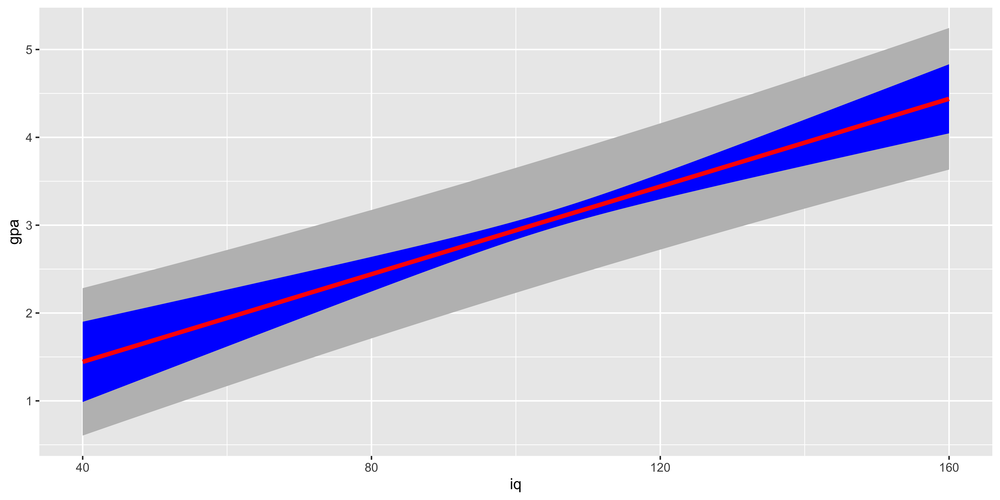
As we look at this plot, another salient feature should jump out: for very large or very small iq values, our predicted GPA is not contained in a reasonable range of GPAs. This is a problem of relying too much on a linear fit to a fundamentally non-linear relationship: the IQ-GPA relationship cannot be linear, because GPA has a lower and an upper bound. Consequently, if we extrapolate too far outside the range we studied, we will get predictions outside the reasonable bound (and we will also get very wide confidence intervals).
Regression Diagnostics
When we fit a line to some data using ordinary least squares regression and then interpret the coefficients, corresponding t-tests, etc. we are making quite a few assumptions. When some of these are violated, we will git a misleading answer from the regression. In this section, we will conjure up various plots and tests to check some of these assumptions.
Some of the most important assumptions we make cannot be tested by looking at the data, instead they require domain knowledge. The most important assumption is that we are measuring the things we want to be. Usually we use some observable proxy variables for unobservable latent properties we are interested in. For instance, we might use GDP/capita of a country as a proxy for income of its citizens, but, this measure does not consider cost of living, income distributions, etc. Domain knowledge and critical thought is requires to guess whether the difference between the measurable proxy and the latent variable is a big deal with respect to our question of interest.
Assumption: relationship between y and x is well described by a line.
We can always fit a line, that doesn’t mean it’s a good idea. The simplest, and most important way to check if it’s a good idea to fit a line is to look at the scatterplot. If it looks clearly non-linear, don’t fit a line to it!
suppressMessages(library(dplyr))
suppressMessages(library(ggplot2))
n = 200
quadratic.data <- data.frame(x = seq(-100, 100, length.out = n),
y=seq(-3, 4, length.out = n)^2+rnorm(n))
ggplot(quadratic.data, aes(x,y))+geom_point()+geom_smooth(method='lm')
When we have a simple regression with just one predictor, it’s really easy to look at the scatterplot, so that’s usually enough, but we can also look at the residuals (difference between y and the y we predict from the regression) as a function of x:
quadratic.data$residuals = residuals(lm(data=quadratic.data, y~x))
ggplot(quadratic.data, aes(x,residuals))+geom_point()+geom_hline(yintercept = 0, color='red')As we move to multiple regression, we can only look at one variable at a time in plots like the one above, so they tend to not be so useful. Instead, we will look at the residuals as a function of the fitted y value.
quadratic.data$fitted.y = fitted(lm(data=quadratic.data, y~x))
ggplot(quadratic.data, aes(fitted.y,residuals))+geom_point()+geom_hline(yintercept = 0, color='red')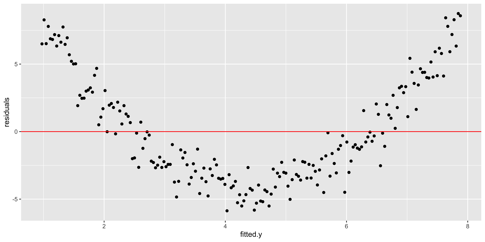
This plot is also returned as the first diagnostic plot of a linear model, from plot(lm(..), 1).
plot(lm(data=quadratic.data, y~x), which = 1)All of these plots are basically showing us what was obvious from the get-go: the line misses the really big quadratic component we built into our data. So we probably shouldn’t be fitting a line.
Assumption: out estimates are not driven by a few huge outliers
n = 99
outlier.data <- data.frame(x = c(rnorm(n),-15), y=c(rnorm(n), 15))
ggplot(outlier.data, aes(x,y))+geom_point()+geom_smooth(method='lm')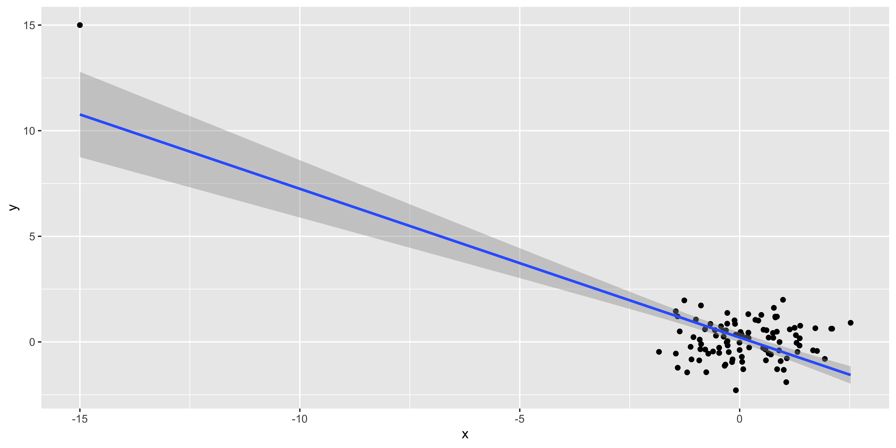
These fake data make it patently obvious that the one outlier at (-15,15) is driving the regression line, but often it might be more subtle.
What allows an outlier to greatly influence a regression? It needs to have a lot of leverage – meaning that it is an outlier with respect to the predictors (here, just x), which we can measure with hat(). Second, it needs to use that leverage by also being an outlier in y. We can check if such a thing happens by looking at the residuals as a function of the leverage.
outlier.data$leverage = hat(outlier.data$x)
outlier.data$residuals = residuals(lm(data=outlier.data, y~x))
ggplot(outlier.data, aes(leverage, residuals))+geom_point()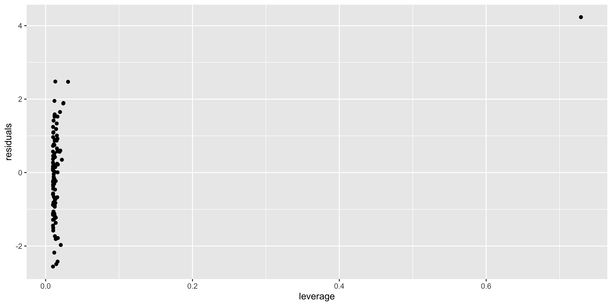
An more useful version of this plot is generated via plot(lm(), 5):
plot(lm(data=outlier.data, y~x), which = 5)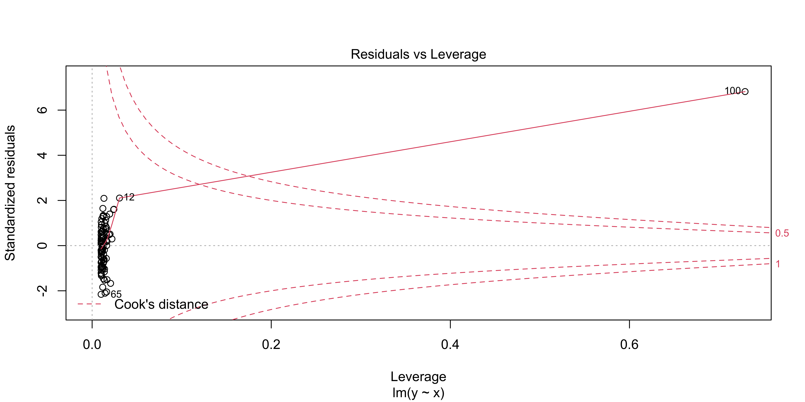
This shows residuals (here they are standardized, meaning, scaled by their sd) as a function of leverage, just as in the plot we made above. However, it also shows contours corresponding to a particular “Cook’s distance.” Cook’s distance is high when a data point has a lot of influence on the regression, meaning that it has a lot of leverage and uses it (by also being an outlier in y). It basically tells us how much this data point is changing our regression line. Proposed cutoffs for a Cook’s distance being too large are 1, or 4/n.
We can look at the Cook’s distance for each data point with plot(lm(), 4)
plot(lm(data=outlier.data, y~x), which = 4)If you have data points with very large Cook’s distances, it means that the regression line you have estimated is largely reflecting the influence of a few data points, rather than the bulk of your data.
Assumption: errors are independent, identically distributed, normal.
There is also a set of assumptions about the behavior of the errors/residuals. They should be normal (so that we are justified in using t and F statistics), they should be identically distributed, and they should be independent.
Errors are independent: independent of x, fitted y, order, each other.
Probably the most important of these assumptions is that the errors are independent, but not being independent can mean a few different things.
Errors can be autocorrelated in order (e.g., if I measure things over time, errors tend to be correlated over time) – this is a major issue in time-series analysis, but for the kind of data we usually deal with, we can mostly ignore it.
Errors might depend on x, or fitted y; this is the kind of thing we saw when we had obviously non-linear data. This is important, but we’ve already considered it.
Errors might correlate with each other – this is what happens when we incorrectly specify a nested / hierarchical model. For instance, if I measure the weight and height of 10 people, each 5 times, I will get 50 measurements; however, I only really have 10 independent units (people) – all measurements of the same person will have a correlated error with repsect to the overall weight~height relationship. We really need to avoid this kind of non-independence in errors, as it will lead to really wrong conclusions; but this is not something we can easily check for; we just need to understand the structure of our data, and specify the appropriate model for the error correlation (with
lmeroraov, etc).
Errors are identically distributed
Typically, ‘identically distributed’ for errors refers to them being ‘homoscedastic,’ or ‘equal variance’ – meaning that the magnitude of the residuals is roughly consistent across our regression (rather than ‘heteroscedastic,’ in which there is more variability in y for some values of x than others).
heteroscedastic.data <- data.frame(x=seq(0,100,length.out=100),
y=seq(0,100,length.out=100)*0.1+
rnorm(100,0,seq(0,100,length.out=100)/10))
ggplot(heteroscedastic.data, aes(x,y))+geom_point()We can check for this using plot(lm, 3)
plot(lm(data=heteroscedastic.data, y~x),3)This shows the absolute, standardized residuals as a function of the fitted y value (not as a function of x, so that this plot will also work for multiple regression with lots of explanatory variables). Clearly, we have bigger errors at bigger y values.
Sometimes such heteroscedasticity arises from our model being wrong. For instance, if we consider how much net worth fluctuates over time, we will see that wealthy people have much larger fluctuations in absolute terms. This is because fluctuations are constant not in dollars, but in percent. Thus, the heteroscedasticity in this case reflects that we are applying a linear model to dollars, but we should instead be considering log(dollars), or percent fluctuations.
So, if we see very large, blatant, heteroscedasticity, we should carefully evaluate if we are measuring something that we really believe should have linear, additive errors. If not, we should use an appropriate non-linear transform (like a logarithm), to get a measure of something that we do believe is linear and additive. However, if we have a variable that seems to us should be linear, and otherwise seems to behave linearly, a slight amount of heteroscedasticity is not that big of a deal, in the grand scheme of things.
Errors are normal
The last technical assumption is that the errors (residuals) are normally distributed. Just as in the case of heteroscedasticity, if they clearly are not, we should think hard if we are specifying the correct model; however, slight deviations from normality are practically guaranteed, and are largely irrelevant.
We can check for this using a qq-plot of the residuals with plot(lm, 2).
x = rnorm(100)
non.normal <- data.frame(x=x, y=x*1+rexp(100, 0.5))
ggplot(non.normal, aes(x,y))+geom_point()
plot(lm(data=non.normal, y~x),2)Insofar as the stadardized residual quantiles don’t fall in line with the theoretical quantiles, we have non-normal residuals. I think a better way to look at weirdness of residuals would be to look at their histogram:
non.normal$residuals = residuals(lm(data=non.normal, y~x))
ggplot(non.normal, aes(x=residuals))+geom_density(fill='gray')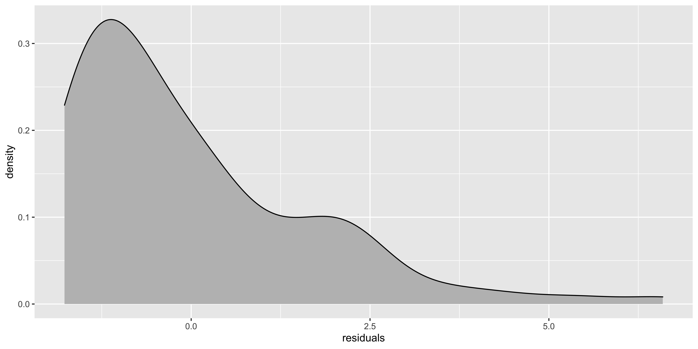
If the histogram of the residuals looks really skewed, then it’s worth trying to figure out how to transform the y variable to get the data to behave more sensibly. Slight deviations from normality won’t matter much.
Testing assumptions
There are assorted null hypothesis tests to see if these assumptions are violated. With enough (real) data, the answer will almost certainly be yes. With too little data, glaringly obvious violations might not reach statistical significance. So, in practice, I find the null hypothesis tests for assumption violations to not be especially useful, and the diagnostic plots to be far more practical.